After completing this lesson, students will be able to
identify different groups of bacteria based on their shape and structure.
categorize types of viruses.
know the role of microbes in agriculture, food industries and medicine.
gain knowledge on modes of infection and disease transmission.
describe the spectrum of diseases on the basis of the causative agents.
know disease control and preventive measures.
Microbiology Bracket OPEN greek words: mikros small bios life bearing, logy- study bracket closed, is a branch of biology that deals with living organisms of microscopic size, which include bacteria, fungai, algayae, protozoa and viruses. Microbes are found in habitats like terrestrial, aquatic, atmospheric or in living hosts. Some of them survive in extreme environments like hot springs, ice sheets, water bodies with high salt content and low oxygen, and in arid places with limited water availability.
Some of the microorganisms are beneficial to us and they are used in the preparation of curd, bread, cheese, alcohol, vaccines and vitamins, while some others are harmful causing diseases to plants and animals including human being. This lesson will explore the beneficial and harmful effects of microbes in relation to welfare of human kind.
Microorganisms differ from each other in size, morphology, habitat, metabolism and several other features. Microbes may be unicellular Bracket OPEN Bacteria bracket closed, multicellular Bracket OPEN Fungai bracket closed, acellular Bracket OPEN not composed of cells-Virus bracket closed. Types of microbes include bacteria, viruses, fungai, microscopic algayae and protists.
Bacteria are microscopic, single celled prokaryotic organisms without nucleus and other cell organelles. Although majority of bacterial species exist as single celled forms, some appear to be filaments of loosely joined cells. The size varies from less than 1 to 10 MEW m in length and 0.2 to 1 MEW m micro meter in width. Bacteria may be motile or non-motile. Special structures called flagella are found on the cell surfaces for motility
Figure 22.1 Structure of a bacterial cell image was given below
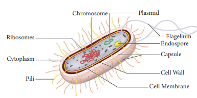
Based on the shapes, bacteria are grouped as:
1. Spherical shaped bacteria called as cocci Bracket OPEN or coccus for a single cell bracket closed.
2. Rod shaped bacteria called as bacilli Bracket OPEN or bacillus for a single cell bracket closed.
3. Spiral shaped bacteria called as spirilla Bracket OPEN or spirillum for single cell bracket closed.
Figure 22.2 Shapes of bacteria image was given below
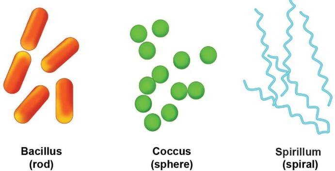
Box item open
DO YOU KNOW
Antonie Van Leeuwenhoek, the first microbiologist designed his own microscope. In 1674, he took plaque from his own teeth and observed it under the microscope. He was astonished to see many tiny organisms moving around, which was otherwise invisible to naked eyes. Box item ends
Bacterial cell has cell membrane, covered by strong rigid cell wall. In some bacteria, outside the cell wall there is an additional slimy protective layer called capsule made up of polysaccharides. The plasma membrane encloses the cytoplasm, incipient nucleus Bracket OPEN nucleoid bracket closed, ribosomes and DNA which serve as genetic material. Ribosomes are the site of protein synthesis. They lack membrane bound organelles. In addition to this, a small extra chromosomal circular DNA called plasmid is found in the cytoplasm.
The term ‘virus’ in Latin means ‘venom’ or ‘poisonous fluid’. Viruses are non-cellular, self replicating parasites. They are made up of a protein that covers a central nucleic acid molecule, either RNA or DNA. The amount of protein varies from 60 percent to 95 percent and the rest is nucleic acid. Nucleic acid is either DNA Bracket OPEN T4 bacteriophage bracket closed or RNA Bracket OPEN Tobacco mosaic virus, TMV bracket closed
A simple virus particle is often called a virion. They grow and multiply only in living cells. They are the smallest among the infective agents varying over a wide range from 18-400 nm Bracket OPEN nanometre bracket closed. They can live in plants, animals, human being and even bacteria. They can be easily transmitted from one host to another.
Viruses exhibit both living and non-living characters.
Living characters of viruses
1. They have the nucleic acid Bracket OPENDNA or RNA bracket closed That is, , the genetic material that can replicate.
2. They can multiply in the living cells of the host.
3. They can attack specific hosts.
Non-living characters of viruses
1. Viruses remain as inert material outside their hosts.
2. They are devoid of cell membrane and cell wall. Viruses are devoid of cellular
organelles like ribosomes, mitochondria, etc.
Box item open
The protein free pathogenic RNA of virus is Viroids. They are found in plant cells and cause disease in plants. box item ends
Viruses are categorised as given below:
Plant virus: Virus that infect plants. Example Tobacco mosaic virus, Cauliflower mosaic virus, Potato virus.
Figure 22.3 Tobacco mosaic virus image was given below
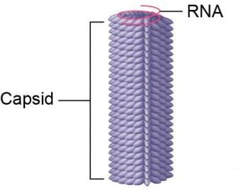
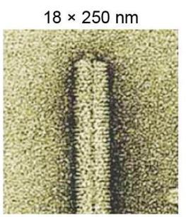
Animal virus: Virus that infect animals.Example Adenovirus, Retrovirus Bracket OPEN HIV bracket closed, Influenza virus, Polio virus.
Figure 22.4 Animal virus Image was given below
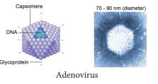
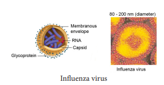
Bacteriophages: Virus that infect bacterial cells. Example T4 bacteriophage.
Figure 22.5 T4 bacteriophage image was given below
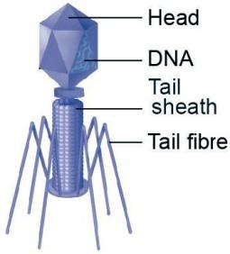
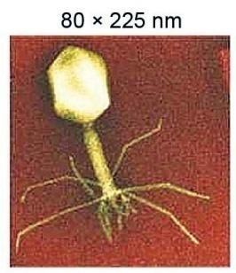
They lack chlorophyll, hence depend on living or dead host for their nutritional needs. Fungai living on living hosts are called parasites, and those living on dead organic matter are called saprophytes. The body of the fungus is called thallus.
Single celled yeast ranges from 1 to 5 MEW m in width. They are spherical in shape. Flagella are absent and hence they are non-motile. In the case of multicellular forms, thallus is called mycelium. Mycelium is a complex of several thin filaments called hyphae Bracket OPEN singular: Hypha bracket closed
Each hypha is 5 to 10 MEW m wide. They are tube like structures filled with protoplasm and cellular organelles. Cell wall is made up of cellulose or chitin. Cytoplasm contains small vacuoles filled with cell sap, nucleus, mitochondria, golgi body, ribosomes, and endoplasmic reticulum. Food material is stored in the form of glycogen or oil globules.
They reproduce vegetatively Bracket OPEN binary fission, budding and fragmentation bracket closed, asexually Bracket OPEN spore formation-conidia bracket closed and sexually Bracket OPEN male and female gametangium are called antheridium and oogonium bracket closed.
Figure 22.6 Structure of fungai image was given below
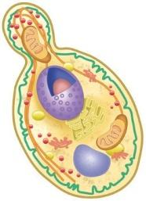
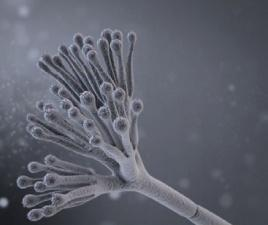
The term 'prion' was coined by Stanley B. Prusiner in 1982. Prions are viral particles which contain only proteins. They do not contain nucleic acid. They are infectious and smaller than viruses. Prions are found in neurons and are rod shaped. Prions induce changes in normal proteins. This results in the degeneration of nervous tissue.
Figure 22.7 Normal Bracket OPEN A bracket closed and Abnormal Bracket OPEN B bracket closed prion protein image was given below
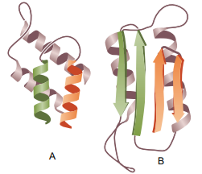
Micro organisms contribute to human welfare in many ways. In this section we will study about the diversified usefulness of microbes.
Microbes play an important role in agriculture as biocontrol agents and biofertilizers. Microbes play a vital role in the cycling of elements like carbon, nitrogen, oxygen, sulphur and phosphorus. These are called biological scavangers.
Microbes as biofertilizers: Microorganisms which enrich the soil with nutrients are called as biofertilizers. Bacteria, cyanobacteria and fungi are the main sources of biofertilizers. Nitrogen is one of the main source of plant nutrients. Atmospheric nitrogen has to be converted to available form of nitrogen. This is done by microbes either in free living conditions or by having symbiotic relationship with the plants. Example Azotobacter, Nitrosomonas Nostoc Bracket OPEN free living bracket closed, symbiotic microbes like Rhizobium, Frankia.
Box item open
Take the root nodules of any pulse or leguminous plant available in your locality. Wash it
thoroughly with water. Crush the nodules on a clean glass slide. Add a drop of distilled water to the crushed material on the glass slide. Observe the preparation under compound microscope. Box item ends
Microbes as biocontrol agents: Microorganisms used for controlling harmful or pathogenic organisms and pests of plants are called as biocontrol agents Bracket OPEN Biopesticides bracket closed. Bacillus thuringiensis Bracket OPEN Bt bracket closed is a species of bacteria that produces a protein called as ‘cry’ protein. This protein is toxic to the insect larva and kills them. Spores of B.thuringiensis are available in sachets, which are dissolved in water and sprayed on plants infected with insect larva.
Microorganisms play an important role in the production of wide variety of valuable products for the welfare of human beings.
Production of fermented beverages: Beverages like wine are produced by fermentation of grape fruits by Saccharomyces cerevisiae.
Curing of coffee beans, tea leaves and tobacco leaves: Beans of coffee and cocoa, leaves of tea and tobacco are fermented by the bacteria Bacillus megaterium. This gives the special aroma.
Production of curd: Lactobacillus sp. converts milk to curd.
Production of organic acids, enzymes and vitamins: Oxalic acid, acetic acid and citric acid are produced by fungus Aspergillus niger. Enzymes like lipases, invertase, proteases, and glucose oxidase are derived from microbes. Yeasts are rich source of vitamin-B complex.
Antibiotics: These are metabolic products of microorganisms, which in very low concentration are inhibitory or detrimental to other microbes. In 1929, Alexander Fleming produced the first antibiotic pencillin. In human beings antibiotics are used to control infectious diseases like cholera, diptheria, pneumonia, typhoid, etc
Table 22.1 Antibiotics produced by micro organisms table was given below
Class of Microoganisms |
Type of Microorganism |
Antibiotic Produced |
Bacteria |
Streptomyces griseus |
Streptomycin |
Streptomyces erythreus |
Erythromycin |
|
Bacillus subtilis |
Bacitracin |
|
Fungi |
Penicillium notatum |
Penicillin |
Cephalosporium acremonium |
Cephalosporin |
Vaccines: These are prepared by killing or making the microbes inactive Bracket OPEN attenuated bracket closed. These inactive microbes are unable to cause disease, but stimulate the body to produce antibodies against the antigen in the microbes.
Table 22.2 Vaccines produced against diseases was given below
Type of Vaccine |
Name of the Vaccine |
Disease |
Live attenuated |
MMR |
Measles, Mumps and Rubella |
BCG Bracket OPEN Bacillus Calmette Guerin bracket closed |
Tuberculosis |
|
Inactivated Bracket OPEN Killed antigen bracket closed |
Inactivated polio Virus Bracket OPEN IPV bracket closed |
Polio |
Subunit Vaccines Bracket OPEN Purified antigens bracket closed |
Hepatitis B Vaccine |
Hepatitis B |
Toxoid Bracket OPEN In activated antigen bracket closed |
Tetanus toxoid Bracket OPEN TT bracket closed |
Tetanus |
Diphtheria toxoid |
Diphtheria |
Disease Bracket OPEN dis = against; ease = comfort bracket closed can be defined as an impairment or malfunctioning of the normal state of the living organism that disturbs or modifies the performance of vital functions of the body. Disease can be categorized based on:
1. The extent of occurrence Bracket OPEN endemic, epidemic, pandemic or sporadic bracket closed.
2. Whether infectious or non-infectious.
3. Types of pathogen – whether caused by bacterial, viral, fungal or protozoan infections.
4. Transmitting agent – whether air borne, water borne or vector borne.
Box item open
World Health Day – 7th April
World Malaria Day – 25th April
World AIDS Day – 1st December World Anti -Tuberculosis Day – 24th March
box item ends
Endemic: Disease which is found in a certain geographical area affecting a fewer number of people Bracket OPEN low incidence bracket closed. Example Occurrence of goitre in Sub-Himalayan regions.
Epidemic: Disease which breaks out and affects large number of people in a particular geographical region and spreads at the same time. Example Influenza.
Pandemic: Disease which is widely distributed on a global scale. Example Acquired Immuno deficiency Syndrome Bracket OPEN AIDS bracket closed.
Sporadic: Disease which occur occasionally. Example Malaria and Cholera.
Infectious diseases are communicable diseases. They are caused by external factors like pathogenic organisms Bracket OPEN bacteria, virus, vectors, parasites bracket closed invading the body and causing diseases. Example Influenza, Tuberculosis, Chickenpox, Cholera, Pneumonia, Malaria, etc
Non-infectious diseases are non-communicable diseases. They are caused by internal factors like malfunctioning of organs, genetic causes, hormonal imbalance and immune system defect. Example Diabetes, Coronary heart diseases, Obesity, Cancer, Goitre, etc
The disease causing microbes enter the body through different means. An infection develops when these pathogens enter the human body through contaminated air, water, food, soil, physical contact, sexual contact and through infected animals. They may be organ specific or tissue specific within our body where microbes reside.
Reservoir of infection refers to the specific environment in which the pathogens can thrive well and multiply without causing diseases. Example Water, soil and animal population
The interval between infection and first appearance of the diseases is called incubation period. It may vary from few hours to several days.
Infection is the entry, development or multiplication of an infectious agent in the human body or animals.
Pathogens cause disease in two ways. They are tissue damage and toxin secretion.
Tissue Damage: Many pathogens destroy the tissues or organs of the body causing morphological and functional damage. For example, bacterium of pulmonary tuberculosis damages the cells of the lungs, and virus causing hepatitis destroys liver tissue.
Toxin Secretion: Many pathogens secrete poisonous substances called toxins which cause tissue damage leading to diseases.
Let us now study about the causative organism, mode of infection, occurrence, symptoms and preventive measures of a few airborne, waterborne, vector borne and sexually transmitted diseases.
Box item open
Robert Koch Bracket OPEN Father of Bacteriology bracket closed is the first German physician to study how pathogens cause diseases. In 1876, he showed that the disease called anthrax of sheep was due to Bacillus anthracis which exist in pastures in the form of protective spores. Box item ends
Human beings inhale atmospheric air. Due to continuous inhalation of contaminated air the chances for airborne microorganisms to find a host and cause infection are higher.
Most of the respiratory tract infections are acquired by inhaling air containing the pathogen that are transmitted through droplets caused by cough or sneeze, dust and spores.
Airborne diseases are caused by bacteria and viruses. A few air borne diseases and their modes of transmission are given in the table below.
Table 22.3 Airborne diseases caused by virus was given below
Disease |
Causative Organism |
Mode of Transmission |
Tissue/ Organ Affected |
Symptoms |
Common Cold |
Rhino virus |
Droplet infection |
Upper respiratory tract Bracket OPEN Inflammation of nasal chamber bracket closed |
Fever, cough, running nose, sneezing and headache |
Influenza |
Myxovirus |
Droplet Infection |
Respiratory tract, Bracket OPEN Inflammation of nasal mucosa, pharynx bracket closed |
Fever, body pain, cough, sore throat, nasal discharge, respiratory congestion |
Measles |
Rubeola virus |
Droplet infection, droplet nuclei and direct contact with infected person |
Respiratory tract |
Eruption of small red spots or rashes in skin, cough, sneezing, redness of eye Bracket OPEN conjunctiva bracket closed, pneumonia, bronchitis |
Mumps |
Myxovirus parotidis |
Droplet infection, droplet nuclei and direct contact with infected person |
Upper respiratory tract |
Enlargement of parotid gland, movement of jaw becomes difficult |
Chicken Pox |
Varicella zoster virus |
Droplet infection, droplet nuclei and direct contact with infected person |
Respiratory tract |
Eruptions of the skin, fever and uneasiness |
Table 22.4 Airborne diseases caused by bacteria was given below
Disease |
Causative Organism |
Mode of Transmission |
Tissue/ Organ Affected |
Symptoms |
Tuberculosis |
Mycobacterium tuberculosis |
Droplet infection from sputum of infected persons |
Lungs |
Persistent cough, chest pain loss of weight and appetite |
Diphtheria |
Cornye bacterium diphtheriae |
Droplet infection, droplet nuclei |
Upper Respiratory tract Bracket OPEN nose, throat bracket closed |
Fever, sore throat, choking of air passage |
Whooping Cough |
Bordetalla pertussis |
Droplet infection, direct contact with infected person |
Respiratory tract |
Mild fever, severe cough ending in whoop Bracket OPEN loud crowing inspiration bracket closed |
Microbes present in the contaminated water cause various infectious diseases. Some of the water borne diseases are cholera, typhoid, infectious hepatitis, poliomyelitis, diarrhoea, etc. The most common waterborne diseases and their causative microbial agents, symptoms of these diseases and preventive measure are given in the tables below .
Table 22.5 Waterborne diseases caused by virus was given below
Disease |
Causative Organism |
Mode of Transmission |
Tissue/Organ Affected |
Symptoms |
Preventive and Control Measures |
Poliomyelitis |
Polio virus |
Droplet infection sputum discharge, secretion from nose, throat, contaminated water food and milk |
Central nervous system |
Paralysis of limbs |
Salk’s vaccine or Oral Polio Vaccine Bracket OPEN OPV bracket closed is administered |
Hepatitis A or Infectious Hepatitis |
Hepatitis A virus Bracket OPEN HAV bracket closed |
Contaminated water, food and oral route |
Inflammation of liver |
Nausea, anorexia, acute fever and jaundice |
Prevention of food contamination, drinking chlorinated boiled water, personal hygiene |
Acute Diarrhoea |
Rotavirus |
Contaminated water, food and oral route |
Intestine |
Vomiting, fever, watery stools with mucus |
Proper sanitation and hygiene |
Table 22.6 Waterborne diseases caused by bacteria was given below
Disease |
Causative Organism |
Mode of Transmission |
Tissue/ Organ Affected |
Symptoms |
Preventive and Control Measures |
Cholera Bracket OPEN Acute diarrhoeal disease bracket closed |
Vibrio cholerae |
Contaminated food, water, oral route and through houseflies |
Intestinal tract |
Acute diarrhoea with rice watery stools, vomiting, muscular cramps, nausea and dehydration |
Hygienic sanitary condition, intake of Oral Rehydration Solution Bracket OPEN ORS bracket closed |
Typhoid Bracket OPEN Enteric fever bracket closed |
Salmonella typhi |
Food and water contaminated with faeces of infected person and through houseflies |
Small intestine |
High fever, weakness, abdominal pain, headache, loss of appetite, rashes on chest and upper abdomen |
Preventing contamination of food by flies and dust, improvement of basic sanitation, treatment with antibiotic drugs |
Vector is an agent that acts as an intermediate carrier of the pathogen. Many insects and animals act as vectors. Diseases transmitted by vectors are called vector borne diseases. These vectors can transfer infecting agents from an infected person to another healthy person. Some of the insect vector borne diseases are Malaria, Filaria, Chikungunya, Dengue, and the diseases which are transmitted through animals are Bird flu and Swine flu.
Malaria continues to be one of the major health problems of developing countries. Malaria is caused by protozoan parasite Plasmodium. Four species of Plasmodium namely, P.vivax, P.malariae, P.falciparum and P.ovale cause malaria. Malaria caused by Plasmodium falciparum is malignant and fatal. Approximately 300 million people around the world get infected with Malaria every year.
It spreads through the bite of an insect vector, the female Anopheles mosquito which feeds on human blood and usually lasts less than 10 days. A person affected by malaria will show symptoms of headache, nausea, muscular pain, chillness and shivering, followed by rapid rise in temperature. Fever subsides with profuse sweating. Use of Quinine drugs kills the stages of malaria parasite.
Box item open
Sir Ronald Ross, an Indian born British doctor, is famous for his work concerning malaria. He worked in the Indian Medical Service for 25 years. He identified the developing stages of malarial parasite in the gastrointestinal tract of mosquito and proved that malaria was transmitted by mosquito. In 1902, he received the Nobel Prize for Physiology or Medicine for his work on the transmission of malaria. box item ends
Chikungunya is caused by virus. It is transmitted in humans by the bite of infected Aedes aegypti mosquito during the day time. It causes severe and persistent joint pain, body rashes, headache and fever. Joint pains can last for a very long time.
Incubation period of the virus is usually 2-12 days. Chillness, high fever, vomiting, nausea, headache, persistent joint pain and difficulty in walking are the common symptoms associated with this disease. The joints get inflamed and the person finds it difficult to walk. Paracetamol is given to relieve pain and reduce fever.
Dengue is known as break bone fever. The name break bone fever was given due to the cause of intense joint and muscle pain. Dengue fever is caused by virus. It is transmitted by Aedes aegypti mosquito.
Incubation period of the virus is usually 5 to 6 days. Onset of high fever, severe headache, muscle and joint pain, rashes, haemorrhage, fall in blood platelet count are the symptoms associated with this disease. Vomiting and abdominal pain, difficulty in breathing, minute spots on the skin signifying bleeding within the skin are also associated with dengue fever. Paracetamol is given to reduce fever and body ache. Complete rest and increased intake of fluid is essential.
Figure 22.8 Dengue Image was given below
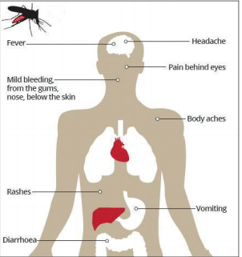
Box item open
An extraction of tender leaves of papaya and herbal drink Nilavembu Kudineer is given to dengue patients. It is known to increase the blood platelet count. Bracket OPEN Source: AYUSH bracket closed box item ends
Box item open
Observe the mosquitoes that are active during the day time. Catch them using an insect net and observe their body and legs. What do you observe question mark. Why are cases of Dengue reported in large numbers during post-monsoon season question mark box item ends
Filariasis is a major health problem in India. This disease is caused by nematode worm Wuchereria bancrofti. The adult worms are usually found in the lymphatic system of man. It is transmitted by the bite of infected Culex mosquito.
Incubation period of filarial worm is 8-16 months and the symptoms include acute infection, fever and inflammation in lymph glands. In chronic infection the main feature is elephantiasis which affects the legs, scrotum and the arms.
Prevention of mosquito bites by using mosquito nets, mosquito screens, mosquito repellents and ointments.
Elimination of breeding places by providing adequate sanitation, underground waste water disposable system and drainage of stagnant water.
Collection of water in any uncovered container such as water tank, pots, flower pots discarded tyres should be avoided.
Control of mosquito larvae by spraying oil on stagnated water bodies.
Adult mosquitoes can be killed by spraying insecticides.
Application of citronella oil or eucalyptus oil on the exposed skin.
Swine Flu first originated from pigs. It is caused by virus that affects pigs and has started infecting humans. The virus spreads through air. It affects the respiratory system.
Influeuza virus H1N1 has been identified as the cause of this disease. It is transmitted from person to person by inhalation or ingestion of droplets containing virus from people sneezing or coughing. Fever, cough, nasal secretion, fatigue, headache, sore throat, rashes in the body, body ache or pain, chills, nausea, vomiting and diarrhoea, and shortness of breath are the symptoms associated with the disease.
Administration of nasal spray vaccine.
Avoiding close contact with a person suffering from flu.
Intake of water and fruit juices will help prevent dehydration.
Plenty of rest will help the body to fight infection.
Always wash hands and practice good hygiene.
Box item open
Swine flu first surfaced in April 2009 and affected millions of people. Then in June 2009 it was declared a pandemic by the World Health Organization Bracket OPEN WHO bracket closed. In 2015, India reportedly had over 31,000 people infected and 1,900 resulting deaths. box item ends
Avian influenza is a contagious bird disease caused by viruses. Birds that can carry and spread avian influenza virus include poultry Bracket OPEN chickens, turkeys or ducks bracket closed, wild birds and pet birds.
It is caused by Influenza Virus H5N1. The incubation period of the virus is 2-7 days. People who have close contact with infected birds or surfaces that have been contaminated by the bird’s secretion from mouth, eyes, mucus, nasal secretion or droppings Bracket OPEN bird faeces bracket closed transmit this disease.
Fever, cough, sore throat, running nose, muscle and body aches, fatigue, headache, redness of eyes Bracket OPEN conjunctivitis bracket closed and difficulty in breathing are the symptoms of this disease.
Figure 22.9 Transmission of Avian influenza virus image was given below
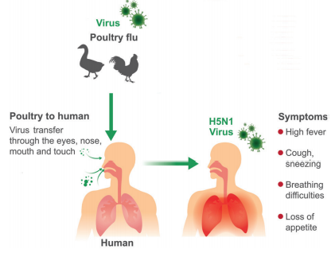
Avoiding open air markets where infected birds are sold.
Avoiding contact with infected birds or consumption of infected poultry.
Proper cleaning and cooking of poultry. Box item ends
Box item open
The avian influenza virus A Bracket OPEN H5N1 bracket closed emerged in 1996. It was first identified in Southern China and Hong Kong. H5N1 was first discovered in humans in 1997 by World Health Organisation. First outbreak was in December 2003. Box item ends
Some pathogens are transmitted by sexual contact from one partner to another and not by casual physical contact. A few sexually transmitted diseases are AIDS, Gonorrhea, Genital warts, Genital herpes and Syphilis.
Acquired Immunodeficiency Syndrome Bracket OPEN AIDS bracket closed is caused by retrovirus Bracket OPEN RNA virus bracket closed known as Human Immunodeficiency Virus Bracket OPEN HIV bracket closed. The virus attacks the white blood cells or lymphocytes and weakens the body’s immunity or self defence mechanism.
It is transmitted through sexual contact Bracket OPEN from infected person to a healthy person bracket closed, blood contact Bracket OPEN transfusion of unscreened blood bracket closed, by surgical equipments Bracket OPEN infected needles and syringes bracket closed, maternal – foetal transmission Bracket OPEN from infected mother to the foetus bracket closed.
Weight loss, prolonged fever, sweating at night, chronic diarrhoea are some of the important symptoms.
Figure 22.10 Structure of HIV image was given below
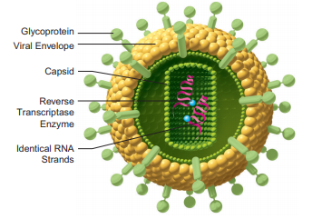
Disposable syringes and needles should be used.
Protected and safe sexual contact.
Screening of blood before blood transfusion.
Avoid sharing shaving blades/razors.
People should be educated about AIDS transmission.
Box item open
DO YOU KNOW
HIV was first recognised in Hatai Bracket OPEN USA bracket closed in 1981. In India the first confirmed evidence of AIDS infection was reported in April 1986 from Tamil Nadu. The AIDS vaccine RV 144 trial was conducted in Thailand in 2003 and reports were presented in 2011. Box item ends
It occurs due to infection of hepatitis-B virus Bracket OPEN HBV bracket closed. The virus damages the liver cells causing acute inflammation and cirrhosis of liver.
It is transferred from infected mother to their babies or by sexual contact. It is also transmitted by contact with infected person’s secretions such as saliva, sweat, tears, breast milk and blood.
Symptoms observed are fever, loss of appetite, nausea vomiting, yellowness of eyes and skin, light coloured stools, itching of skin, headache and joint pain.
Screening of blood donors before blood donation can prevent the transmission.
Injection of drugs to be prevented.
Having safe and protected sex.
Sharing of razors should be avoided.
The hepatitis B vaccine offers excellent protection against HBV. The vaccine is safe and highly effective.
Some of the other sexually transmitted diseases caused by bacteria and virus are discussed in Table 22.7.
Immunization is a process of developing resistance to infections by administration of antigens or antibodies. Inoculation of vaccines into the body to prevent diseases is called as vaccination.
One effective way of controlling the spread of infection is to strengthen the host defenses. This is accomplished by immunization, which is one of the cost effective weapon of modern medicine.
When a large proportion of a community is immunized against a disease, the rest of the people in the community are benefited because the disease does not spread.
Vaccines are preparation of living or killed microorganisms or their products used for prevention or treatment of diseases. Vaccines are of two types: Live vaccines and Killed vaccines
Live Vaccines: They are prepared from living organisms. The pathogen is weakened and administered. Example BCG vaccine, oral polio vaccine.
Table 22.7 Sexually transmitted diseases was given below
Infectious agent |
Disease |
Causative Organism |
Mode of Transmission |
Tissue/ Organ Affected |
Symptoms |
Bacteria |
Gonorrhoea |
Neisseria gonorrhoea |
Sexual contact |
Urethra is affected |
Discharge from genital openings, pain during urination |
Syphilis |
Treponema pallidum |
Sexual contact |
Minute abrasion on the skin or mucosa, of genital area |
Ulceration on genitals, skin eruption |
|
Virus |
Genital Herpes |
Herpes Simplex Virus |
Sexual contact ,entry through mucous membrane of genital region |
Genital organs of male and female individuals |
Painful blisters in mouth, lips, face and genital region |
Genital Warts |
Human Papilloma virus |
Sexual contact Bracket OPEN skin to skin bracket closed |
Genital areas of male and female individuals |
Vaginal discharge, itching, bleeding and burning |
Box item open
The process of vaccination was introduced by Edward Jenner. According to the World Health Organisation Bracket OPEN WHO bracket closed, Jennerian vaccination has eliminated small pox totally from the human population. box item ends
Killed Vaccines: Microorganisms Bracket OPEN bacteria or virus bracket closed killed by heat or chemicals are called killed or inactivated vaccines. They require a primary dose followed by a subsequent booster dose. Example Typhoid vaccine, cholera vaccine, pertussis vaccine.
Box item open
Know your Scientist
Louis Pasteur is an 18th century French chemist and microbiologist. He coined the term vaccine. Pasteur developed vaccine against chicken pox, cholera, anthrax, etc. box item ends
The World Health Organization in the year 1970 has given a schedule of immunization for children. This schedule is carried out in almost all countries. Table 22.8 gives the schedule of vaccination procedures followed in India.
BCG Bracket OPEN Bacillus Calmette Guerin bracket closed: This was prepared by two French workers Calmette and Guerin Bracket OPEN 1908-1921 bracket closed. The bacilli are weakened and used for immunization against tuberculosis.
DPT Bracket OPEN Triple Vaccine bracket closed: It is a combined vaccine for protection against Dipetheria, Pertussis Bracket OPEN whooping cough bracket closed and Tetanus.
MMR: Mumps, Measles, Rubella vaccine gives protection against viral infections.
DT: It is a dual antigen or combined antigen. It gives protection from Diphtheria and Tetanus.
TT Bracket OPEN Tetanus Toxoid bracket closed: Toxin of Tetanus bacteria.
TAB: Combined vaccine for typhoid, paratyphi A and paratyphi B.
Table 22.8 Immunization Schedule was given below
Age Vaccine Dosage |
New born BCG 1st dose |
15 days Oral Polio 1st dose |
6th week DPT and Polio 1st dose |
10th week DPT and Polio 1st dose |
14th week DPT and Polio 1st dose |
9 to 12 months Measles 1st dose |
18 to 24months DPT and Polio 1st dose |
15 months 2 years MMR 1st dose |
2 to 3 years TAB 2 doses at 1 month gap |
4 to 6 years DT and Polio 2nd booster |
10th year TT and TAB 1st dose |
16th year TT and TAB 2nd booster |
Box item open
Activity 3
Recently in 2018, Nipah virus was in the headlines of the daily newspaper. Collect the following information. What is Nipah virus question mark How it gets transmitted question mark Mention the preventive measures taken by the Government to check the disease. box item ends
Bacteria are single celled prokaryotic organisms, without a well defined nucleus Bracket OPEN nucleoid bracket closed and other cell organelles. The genetic material is DNA.
Viruses are small microscopic infectious agents that can multiply only inside the living cells.
Fungi are group of eukaryotic heterotrophs which are either single celled Bracket OPEN Yeast bracket closed or multicellular Bracket OPEN Penicillium, Agaricus bracket closed.
Microorganisms which enrich the soil with nutrients are called as biofertilizers.
Most of the respiratory tract infections are acquired by inhaling air containing the pathogen that are transmitted through droplets caused by cough or sneeze, dust and spores.
Some of the air borne diseases are tuberculosis, whooping cough, diphtheria, chicken pox, mumps, measles and influenza.
Infectious diseases that can spread through water are diarrhoea, dysentery, cholera, typhoid, hepatitis and poliomyelitis.
Diseases transmitted by vectors are called vector borne diseases. Some of them are malaria, filaria, chikungunya and dengue.
Diseases transmitted by animal to man are swine flu and bird flu.
Sexually transmitted diseases such as gonorrhea, genital warts, genital herpes, syphilis, AIDS are transmitted from one person to another by close physical contact.
Antibiotics Substances that kill or prevent the growth of microorganisms.
Biofertilizer Microorganisms which enrich the soil with nutrients.
Biopesticides Agents which control insect pests in natural way without causing harm to the environment.
Flagella Lash-like appendage protruding from the cell body of bacterial cell. Immunisation Process by which the body produces antibodies against the specific vaccine when administered.
Pathogen A biological agent that causes disease to its host. Example bacteria virus etc.
Prions Viral particles which contain only protein. They do not contain nucleic acid.
Vaccines Preparation of antigenic proteins of pathogens Bracket OPEN weakened or killed bracket closed which on inoculation into a healthy person provides temporary / permanent immunity against a particular disease.